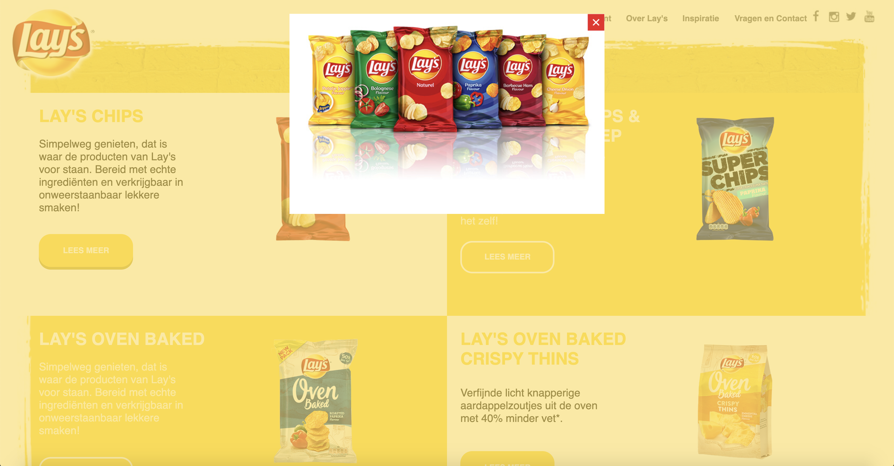
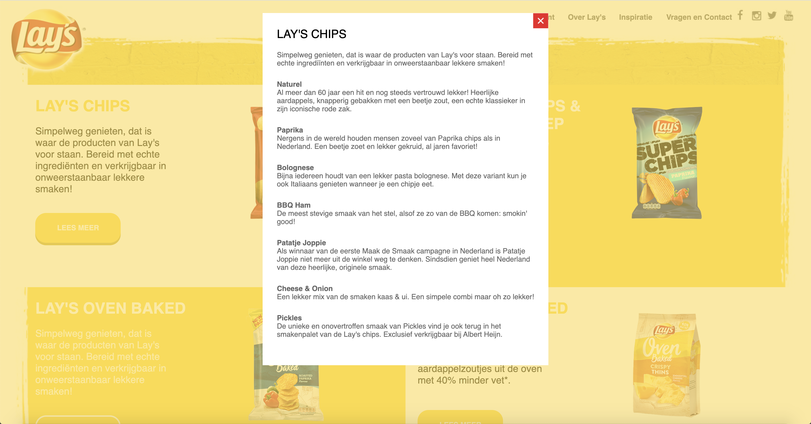
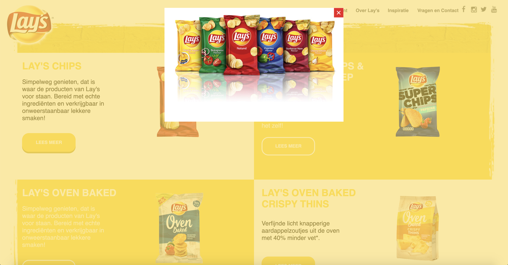
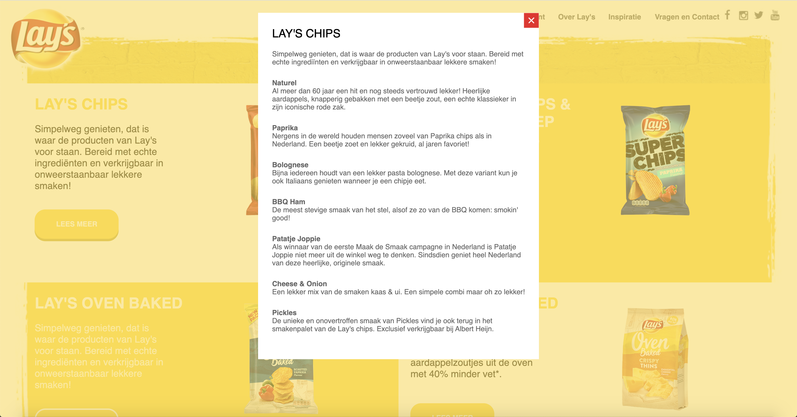

When
November 2020
This project started with some breakdown sketches to understand the layout of the Lay’s website some more. As I was working Mobile First, I decided just to make a breakdown sketch of the mobile version.

November 2020
This project started with some breakdown sketches to understand the layout of the Lay’s website some more. As I was working Mobile First, I decided just to make a breakdown sketch of the mobile version.
After the sketches, I knew how to get started with my coding. As I said, I was working Mobile First, so that’s how the project started for me. Not to much time passed by until I got my mobile variant exactly how I wanted it to.


The next step of this project was making the website responsive. This was the first time I was going to work with mediaqueries, so it took me some getting used to. Eventually I got the hang of it and got it working on all devices.


As the last part of my recreation, I had to create a detail page of one of the flavors as well. I chose first to recreate the original detail page. After that, I spiced it up, by restyling the detail page with a flippable image.
 


